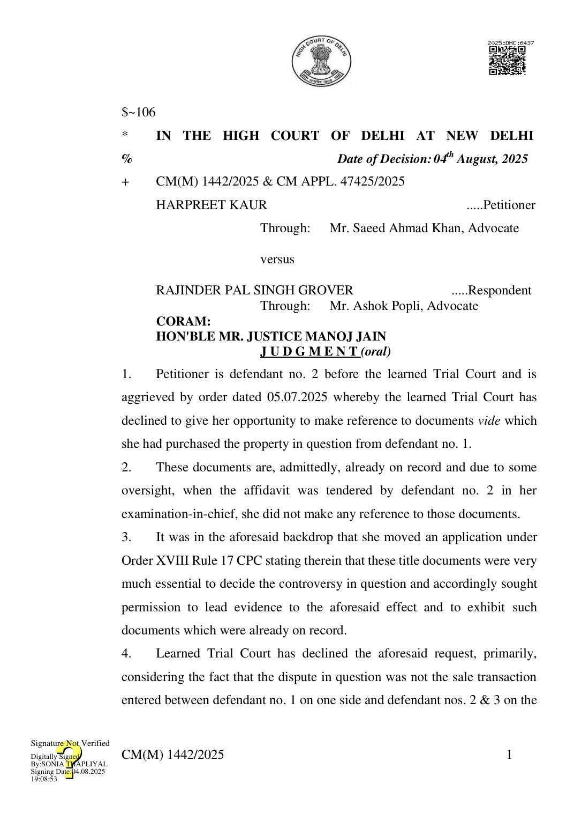

other but the question was whether the defendant no. 1 had ownership over the suit property or not.
- Evidently, to that extent, there cannot be any illegality in the impugned order but fact remains that since on the basis of the application moved under Order I Rule 10 CPC, the subsequent purchaser had been impleaded in the suit and since the alleged title documents in their favour were already on record, even if, the action was belated one, one opportunity, albeit, subject to certain conditions should have been granted to her.
- Learned counsel for respondent/plaintiff appears on advance notice and submits that though the present petition lacks any merit or substance, in order to ensure that there is no further delay in the disposal of his own suit, he would have no objection if, without prejudice to his rights and contentions, one last and final opportunity in this regard is granted to defendant no. 2.
- Resultantly, the application moved by defendant no. 2 is allowed and she is permitted to file additional affidavit with respect to documents in question and is permitted to enter into witness for such limited purpose.
- Needless to say, plaintiff would be entitled to cross-examine defendant no. 2 on the aforesaid aspect and would be at liberty to take objection, as permissible under law, with respect to exhibition of said documents.
- Simultaneously, for causing delay in the matter and for not mentioning the aforesaid documents in the affidavit at the earliest available opportunity, defendant no. 2 (petitioner herein) is burdened with cost of Rs. 15,000/which shall be paid to the plaintiff on the next date of hearing before the learned Trial Court, which is stated to be of tomorrow i.e. 05.08.2025.
- The present petition stands disposed of in aforesaid terms.
CM(M) 1442/2025 2
- Pending application also stands disposed of in aforesaid terms.
(MANOJ JAIN) JUDGE AUGUST 4, 2025/dr/js CM(M) 1442/2025 3